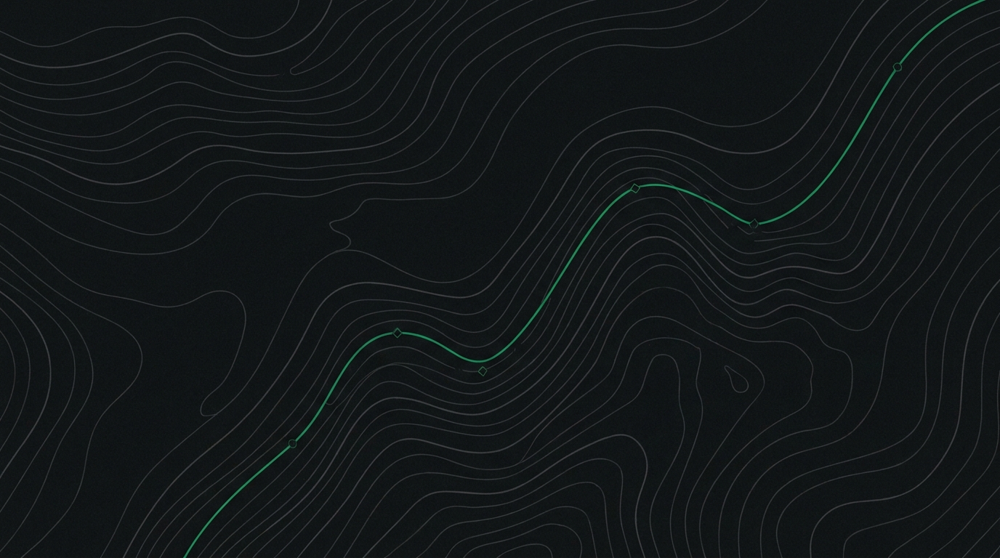

Insights & economic trends
How Hermes is tracking against the S&P 500, week by week, plus the macro backdrop behind each call.
Bot vs S&P (latest week)
00.00%
Win rate
00%
Profit factor
0.00
Trades logged
0
Equity vs. S&P 500
Every closed week adds one more point to this curve, measured against the same S&P 500 baseline.
Portfolio equity vs. S&P 500 baseline
Economic backdrop

Field notes
Click a week to read the full breakdown. Latest week is open by default.